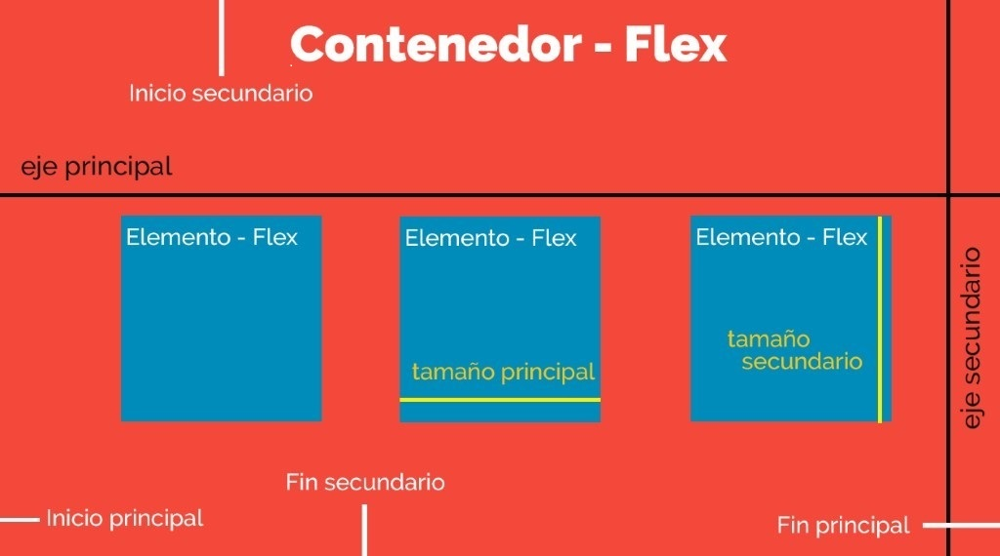
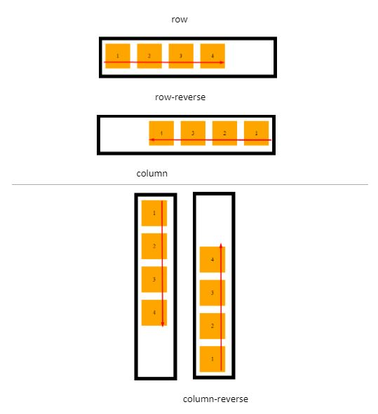
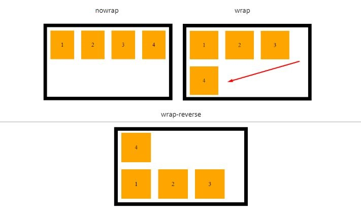
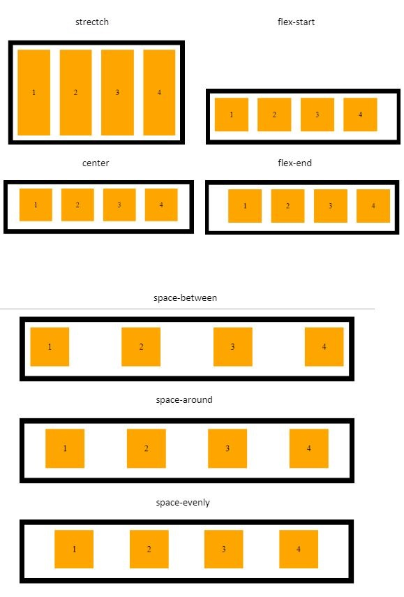
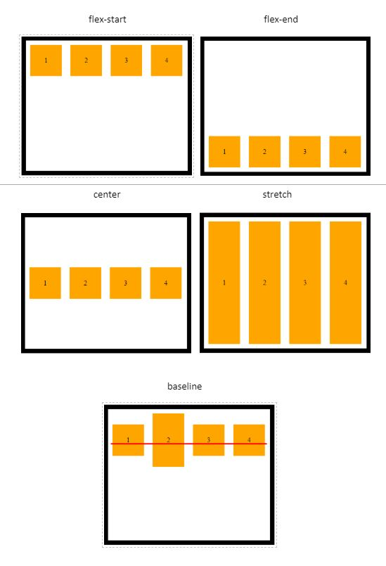

Flex Box, ¿qué es?
La maquetación web consiste en dar estructura y diseño a las páginas que forman un sitio en internet, durante muchos años se utilizaron variadas etiquetas y selectores para llevar a cabo funciones como lo son centrar o alinear un contenido sin embargo este trabajo en ocasiones era tedioso, la creciente cantidad de dispositivos móviles se creo una necesidad de maquetar de una forma más rápida y facil de comprender y por ello nació Flexbox que traduce diseño de caja flexible esta herramienta permite mediante css mejorar el diseño responsive y usar menos código en el posicionamiento de elementos en la página.
Estructura
La estructura de Flexbox se compone de contenedores padre e hijos (Contenedor-Flex y Elementos-Flex respectivamente)
- El Contenedor-Flex es nuestro contenedor padre, y es él quién va a contener a todos los elementos hijos a los cuáles queremos posicionar.
- El Elemento-Flex es nuestro elemento hijo, el cual utilizará todo el espacio disponible para ubicarse de acuerdo a las propiedades a las cuales este sometido junto a los demas Elementos-Flex contenidos.
Cada diseño flex esta compuesto por dos ejes:
- Un eje principal que define el posicionamiento horizontal de los Elementos-Flex.
- Un eje secundario que define el posicionamiento vertical de los Elementos-Flex.
El Contendor-Flex contiene direcciones que definen el origen y el fin del flujo de Elementos-Flex:
- Inicio principal
- Fin principal
- Inicio secundario
- Fin secundario
Cada Elemento-Flex está definido por sus dimensiones, anchura(tamaño principal) y altura(tamaño secundario) que dependen del eje principal y el eje secundario.
Propiedades
Si queremos utilizar las propiedades de Flexbox tendremos que definirlo mediante la propiedad display y su valor flex o inline-flex dentro del selector que nosotros definamos que es nuestro elemento padre o Contenedor-Flex.
.contenedor-padre {
display: flex
}
En este documento solo se describirán brevemente las propiedades más importantes del elemento padre
Flex-direction
Es la encargada de definir el eje principal y secundario de nuestros elementos hijos. Estos ejes como ya se mencionó pueden se verticales, formando columnas y horizontales formando filas.
.contenedor-padre {
display: flex
flex-direction: row | row-reverse | column | column-reverse ;
}
Flex-wrap
Por defecto flex, trata de disponer de los elementos en una misma línea, si no es el caso que necesitás, con flex-wrap podés ordenar los elementos en mas de una fila o columna.
.contenedor-padre {
display: flex
flex-wrap: nowrap | wrap | wrap-reverse ;
}
Justify-content
Cuando nombramos el eje principal de un elemento padre, es decir el eje horizontal, se destaca esta propiedad para dar direccionamiento a los elementos hijos.
.contenedor-padre {
display: flex
justify-content: stretch | flex-start | flex-end | center | space-between | space-around | space-evenly ;
}
Align-items
Al igual que justify-content esta propiedad te permite distribuir los elementos en un eje, pero esta vez en el eje vertical.
.contenedor-padre {
display: flex
align-items: flex-start | flex-end | center | stretch | baseline ;
}
Para finalizar hay que remarcar que dichas propiedades se pueden combinar unas con otras, definir contenedores padres con elementos hijos a los cuales también pueden definirse como padres que contienen hijos y así sucesivamente. Es por ello que Flexbox nos da un sin fin de posibilidades para crear disposiciones para los componentes de nuestras páginas web, de una manera sencilla y muy fácil de aprender.
Referencia
German Cabrera. Febrero de 2020. Flexbox - ¿Qué es y para qué sirve?. Recuperado de: https://somospnt.com/blog/148-flexbox-que-es-y-para-que-sirve